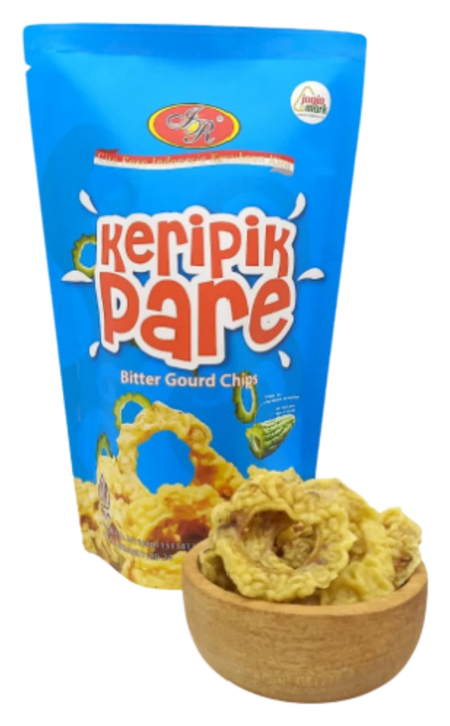
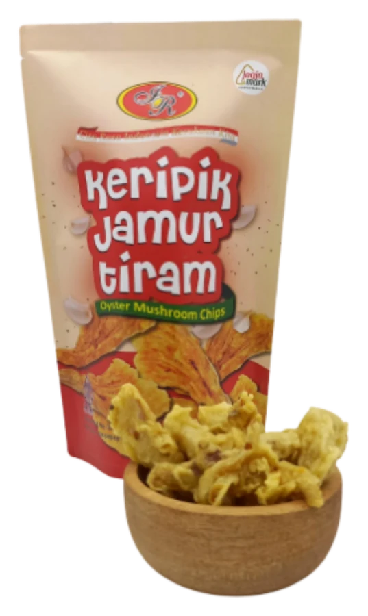

Pare

Keripik Pare
Keripik pare yang renyah dan gurih, pahitnya hilang setelah diolah. Bebas gluten dan aman untuk vegetarian.
Rp 18.000/ pcs

Keripik pare yang renyah dan gurih, pahitnya hilang setelah diolah. Bebas gluten dan aman untuk vegetarian.

Keripik pare renyah dengan bumbu cabai pedas sedang yang masih ramah untuk semua orang.

Keripik jamur tiram yang gurih dan renyah, diolah dengan mesin spinner sehingga tidak berminyak.

Keripik jamur tiram renyah dengan bumbu cabai pedas sedang, tidak berminyak.

Keripik tahu putih yang diiris tipis, renyah, tidak seret di leher, dan minim minyak.

Keripik tahu renyah dengan bumbu cabai pedas sedang yang masih ramah untuk semua orang.